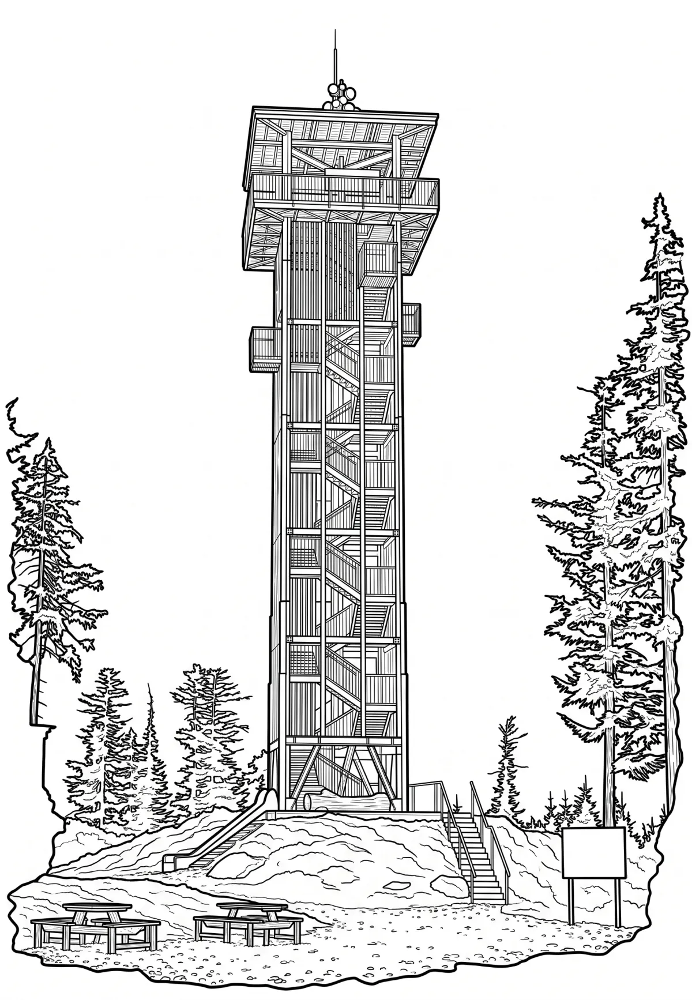

Rozhledna Špičák
Plzeňský kraj · 1202 m n. m.

technická památka · #066
Špičák (německy Spitz Berg) je 1202 m vysoká hora na Šumavě, v Královském hvozdu. Nachází se severně od Železné Rudy v okrese Klatovy. Na jihovýchodním svahu Špičáku se v nadmořské výšce 865 až 1200 m rozprostírá lyžařský areál Ski areál Špičák, který je tvořen celkem dvanácti sjezdařskými tratěmi různé obtížnosti (nejdelší z nich je dlouhá 1,8 km) o celkové délce 8,4 km. Unikátní je nejprudší…